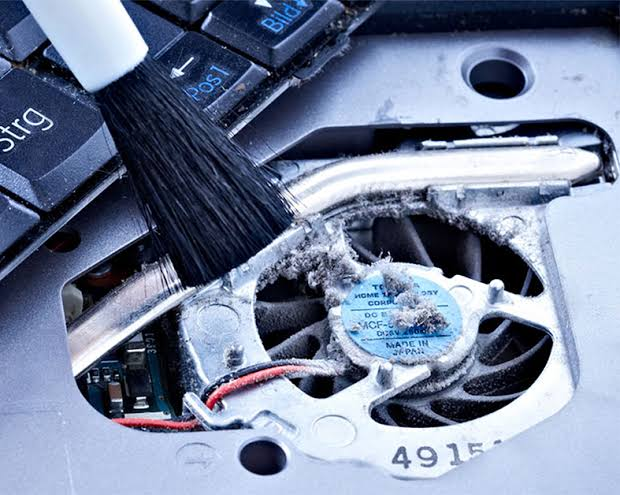
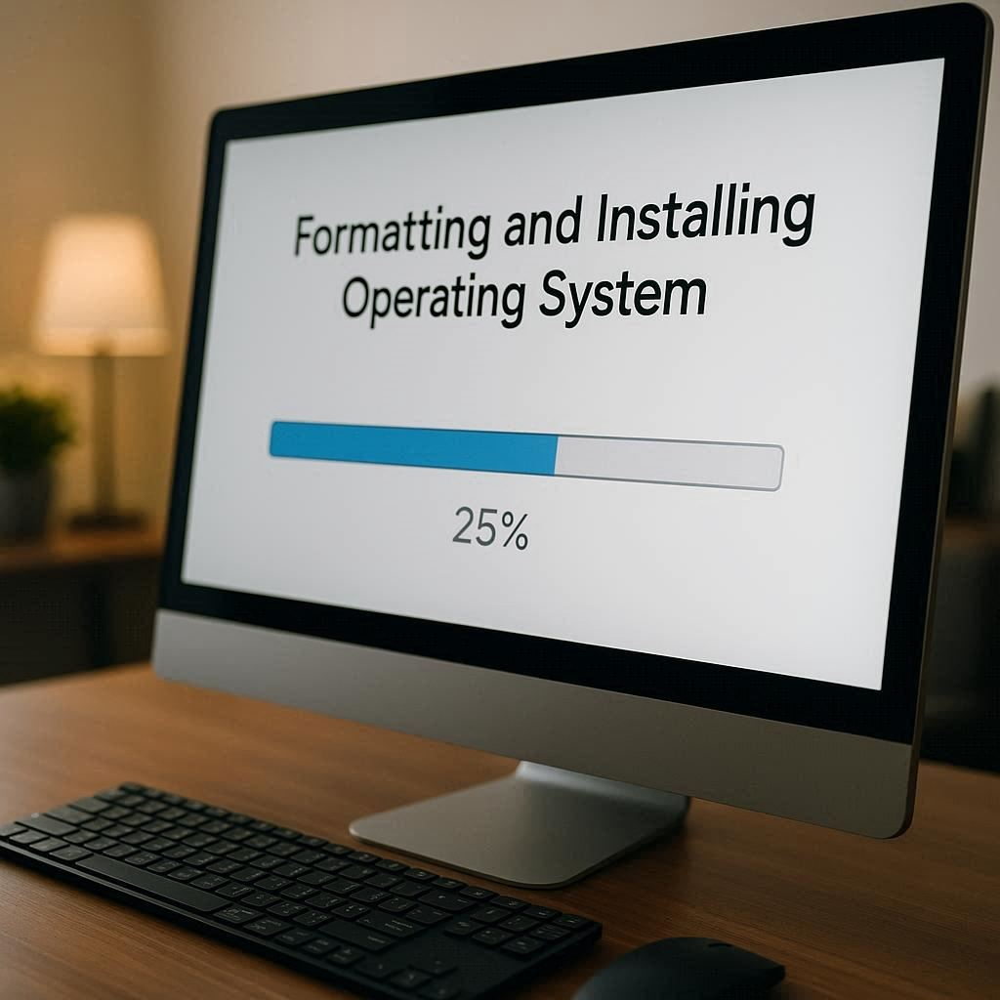
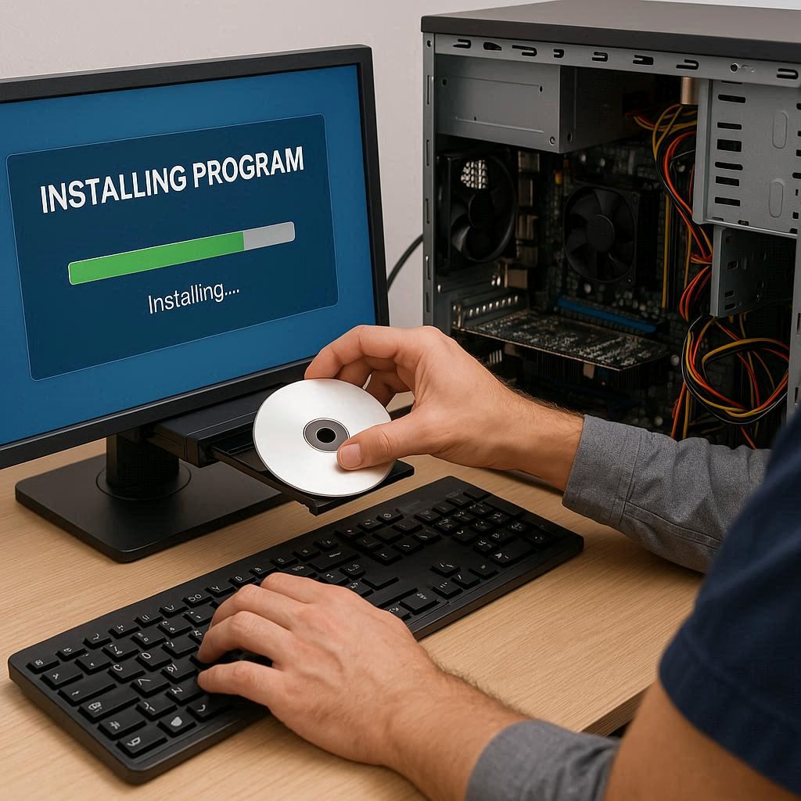

Nossos Serviços em Ubatuba

Manutenção de Notebooks
Serviços completos de manutenção e reparo de notebooks em Ubatuba. Formatação, limpeza interna e troca de peças com rapidez e segurança.
Peça seu orçamento

Formatação de Computadores
Formatação de desktops e notebooks, instalação de sistema operacional e programas essenciais. Recuperação de desempenho garantida em Ubatuba.
Peça seu orçamento

Instalação de Software
Instalação de softwares, antivírus e ferramentas de produtividade. Configuração personalizada para seu computador ou notebook.
Peça seu orçamentoBackup e Recuperação de Dados
Recuperação de arquivos perdidos, backup seguro e organização de dados. Proteja suas informações importantes em Ubatuba.
Peça seu orçamento